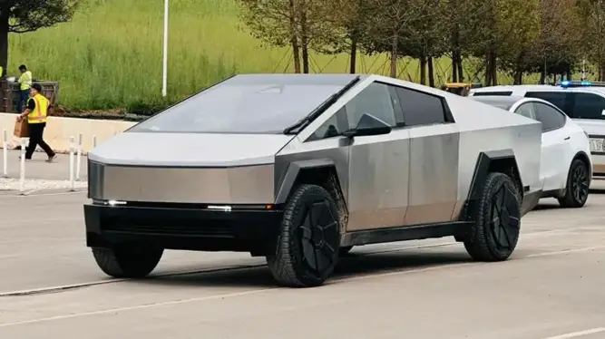

-
All Bookmarks
-

driveteslacanada.ca
South Korean firm wins $300 million Tesla Cybertruck parts supply ...
Tesla is getting closer and closer to the start of Cybertruck production, and when it does some of the parts that will go into ...215784,020 -

teslarati.com
Tesla Cybertruck production teased in $227M+ order for parts
Tesla ordered Cybertruck parts worth more than $227 million from South Korean company Seoyon E-Hwa. The news teased Cybertru...95645.7K